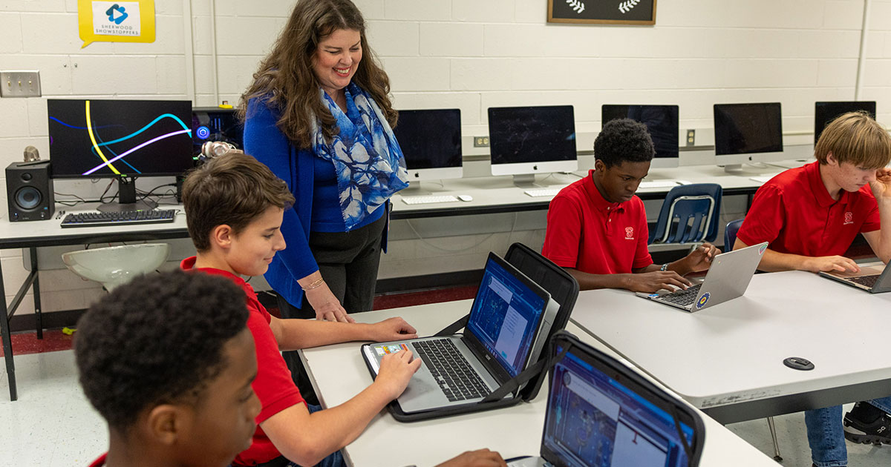
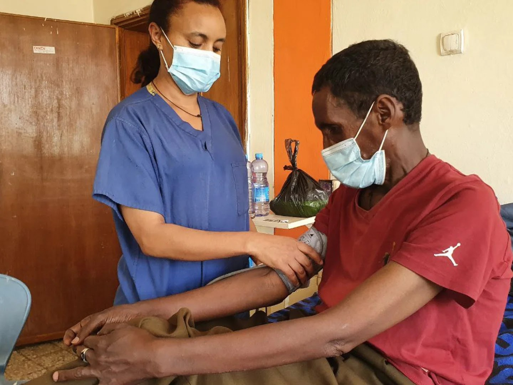

Palestra de 21/07/2026 • 90 minutos + apêndice
Inteligência artificial na educação
O futuro não será decidido por quem usa mais tecnologia, mas por quem aprende a formular problemas, verificar respostas e assumir responsabilidade.
Fontes primárias
Interações com o público
Plano de 90 dias

Cronologia em duas trilhas
A IA e a tecnologia educacional não nasceram ontem
Do laboratório universitário ao copiloto cotidiano, duas histórias avançaram em paralelo até convergirem em 2022.
IA
- TuringA pergunta sobre pensamento de máquinas ganha forma operacional.
- DartmouthO campo recebe o nome “inteligência artificial”.
- Deep BlueUm sistema vence o campeão mundial de xadrez.
- Deep learningRedes profundas escalam reconhecimento de padrões.
- TransformersSurge a arquitetura-base dos grandes modelos de linguagem.
- IA generativaA interação em linguagem natural chega ao público em massa.
Educação
- PLATOEnsino computacional começa no ensino superior.
- MicrocomputadoresLaboratórios se espalham pelas escolas.
- Web + LMSConteúdo e gestão da aprendizagem tornam-se online.
- MOOCsCursos universitários ganham escala global.
- Ensino remotoInfraestrutura digital torna-se essencial.
- CopilotosTutoria, produção e feedback entram na rotina.
Interação 1 • posicione-se
O Vale do Silício abandonou a tecnologia?
Escolha a afirmação mais precisa antes de revelar a checagem.
Evidência antes de entusiasmo
O ganho aparece quando a IA recebe arquitetura pedagógica
Os melhores resultados combinam conteúdo validado, andaimes, feedback, ritmo próprio e um humano responsável.
Tutoria de inglês com Copilot
Programa curricular mediado por professores. O resultado não isola “a ferramenta”: mede a intervenção completa.
Banco Mundial, 2025Tutor CoPilot em matemática
Probabilidade maior de domínio; o ganho chegou a 9 p.p. entre tutores menos experientes.
Stanford NSSATutor guiado supera aula ativa no pós-teste
Contexto específico, respostas cuidadosamente desenhadas e tempo mediano de 49 minutos versus 60.
Scientific Reports, 2025Limite da evidência: disciplinas, contextos e ferramentas são específicos. Os resultados apoiam IA bem desenhada; não autorizam substituir professores.
Panorama internacional
Sistemas avançados formam capacidade — não apenas compram ferramentas
Política não prova impacto, mas revela prioridades: progressão curricular, ética, formação docente, pilotos e governança.
China
Currículo progressivoPercepção no primário, uso no fundamental e projetos avançados no ensino médio.
Ministério da EducaçãoEstados Unidos
Humano no circuitoO guia federal coloca professores e estudantes no centro das decisões e da avaliação.
U.S. Department of EducationUnião Europeia
Ética aplicávelDiretrizes práticas para educadores ligadas à estratégia digital e à regulação de IA.
Comissão EuropeiaReino Unido
Pilotos com cautelaEscolas medem tempo docente, qualidade, proteção de dados e liderança antes de escalar.
Department for EducationBrasil
Adoção já começouA TIC Educação mede o uso real; CAPES e UFRN abriram 40 mil vagas de formação para educadores.
CAPES / MECO ponto de inflexão é humano
Sem preparo docente, velocidade amplia erro. Com preparo, pode ampliar aprendizagem.
verificar afirmações e abrir fontes
testar grupos, linguagem e resultados
classificar dados antes de enviar
preservar esforço cognitivo e autoria
garantir acesso, alternativas e mediação
Aprendizagem e mente humana
IA produtiva não encurta o pensamento: torna o pensamento visível.
Uma atividade forte pede que o estudante tente antes, dialogue com a ferramenta e reconstrua a resposta com suas próprias razões. Outra estratégia é “aprender ensinando”: explicar o conceito à IA, testar perguntas e corrigir a explicação recebida.
- 1TentarAtive conhecimento prévio e produza uma primeira hipótese.
- 2DialogarPeça contrapontos, exemplos e perguntas — não apenas a resposta.
- 3ReconstruirCheque fontes, explique escolhas e produza síntese autoral.
Interação 2 • diagnóstico de prontidão
Em qual estágio está sua instituição?
Marque de 0 a 3 em cada dimensão. O cálculo é local e não envia dados.
0/15Estágio: explorar com segurança
Próximo passo: escolha um problema concreto e forme um pequeno grupo responsável.
Profissões e mercado de trabalho
A IA não atinge profissões como blocos. Ela recombina tarefas.
O valor está na combinação: domínio profissional + alfabetização em IA e dados + capacidades humanas.
Interação 3 • explorador
Escolha uma profissão e redesenhe o trabalho
Da sala de aula ao mundo real
Entender IA já é parte da alfabetização para ciência, saúde e produção
Previsão computacional não é verdade pronta: cada aplicação exige validação, contexto e responsabilidade profissional.

Medicina
Mais dispositivos, mais necessidade de avaliação
A FDA mantém uma lista pública de dispositivos médicos habilitados por IA. A lista documenta autorizações; não significa desempenho perfeito em toda população.
Abrir base da FDAFarmacologia e biologia
Hipóteses biomoleculares em nova escala
AlphaFold ajuda a prever estruturas e interações. A saída orienta pesquisa, mas não substitui experimento nem comprova eficácia clínica.
Conhecer o AlphaFoldAgricultura
Aplicação localizada com visão computacional
Sistemas identificam plantas e controlam pulverização em tempo real. Agrônomos continuam responsáveis por manejo, segurança, solo, clima e viabilidade.
John Deere Smart ApplyVídeo curto • aplicação científica
Como o AlphaFold mudou a previsão de estruturas de proteínas
Assista e discuta: onde termina a previsão e onde começa a validação científica?
Interação 4 • oficina de 12 minutos
Redesenhe uma tarefa real — não apenas um prompt
Escolha uma entrega semanal. Separe o que pode ser acelerado, o que merece copilotagem e o que precisa permanecer sob autoria humana.
- 2 min: descreva a entrega e o padrão de qualidade.
- 3 min: classifique tarefas nas três zonas.
- 3 min: defina evidências e revisão.
- 2 min: troque com uma dupla.
- 2 min: escolha um experimento pequeno.
Seu rascunho fica salvo somente neste navegador.
Catálogo verificado em 20/07/2026
71 IAs para aprender e potencializar o trabalho
Links oficiais, capacidades, perfis de uso, formas de acesso e um cuidado prático para cada ferramenta.
71 ferramentasExplore o catálogo completo.
Planos, limites e nomes comerciais mudam. Confirme a página oficial antes de contratar ou tratar dados sensíveis. IA apoia — não substitui julgamento, formação, ética ou supervisão humana.
Do palco para a prática
Roteiro de 90 minutos + implementação em 90 dias
Comece pelo problema e pela capacidade humana; só então escolha ferramenta, processo e escala.
- De onde viemosCronologia da IA e da tecnologia educacional
- O mitoVale do Silício, telas e o falso retorno ao analógico
- O que funcionaEvidências, países e critérios de qualidade
- O que pode falharDespreparo docente, ética, avaliação e verificação
- Como muda o trabalhoSetores, profissões, tarefas e competências
- Como implementarOficina e piloto responsável
- CompromissoUma decisão concreta para a próxima semana
Diagnosticar e proteger
- Ouvir professores e estudantes
- Mapear usos reais, dados e riscos
- Escolher uma dor mensurável
- Publicar regras mínimas provisórias
Pilotar e formar
- Treinar pequena equipe
- Comparar antes/depois
- Revisar amostras e incidentes
- Registrar prompts, fontes e decisões
Decidir e escalar
- Medir aprendizagem e tempo
- Ouvir grupos afetados
- Ajustar governança e contratos
- Escalar, redesenhar ou interromper
Política mínima antes da escala
Finalidade autorizadaDados proibidosRevisão humanaTransparência de usoCanal de incidenteDireito de contestação
Apresentação completa
Conduza a palestra slide a slide
Use as setas do teclado, abra em tela cheia ou baixe o arquivo editável.
Baixar PowerPoint completo
Inclui notas de fala, links clicáveis e apêndice com ferramentas.
Palestrante
e criador
e criador
Sobre o palestrante e criador do site
Professor Engenheiro
Davi Antonino Nunes da Silva
Engenheiro de Software, Analista e Desenvolvedor de Sistemas e educador que conecta tecnologia, formação profissional e aprendizagem.
Engenheiro de Software em formação pela FIAP e Analista e Desenvolvedor de Sistemas pela Anhanguera, atua no desenvolvimento full stack de plataformas educacionais, análise de dados e soluções com inteligência artificial. É professor e mediador pedagógico no curso de Análise e Desenvolvimento de Sistemas da Anhanguera Sertãozinho e também professor de Física e Matemática no Ensino Médio.
Sua trajetória reúne educação, programação, robótica, coordenação pedagógica e criação de experiências digitais, com foco em transformar tecnologia em aprendizagem significativa, produtividade e decisões responsáveis.
- 01Engenharia de SoftwareFIAP • formação em andamento
- 02Análise e Desenvolvimento de SistemasAnhanguera • formação concluída
- 03Professor de ADSAnhanguera Sertãozinho
- 04Professor de Física e MatemáticaEnsino Médio
Conteúdo, pesquisa, palestra e desenvolvimento deste site por Davi Antonino Nunes da Silva.
Transparência
Fontes principais e como ler os números
Percentuais sem população, data ou ressalva podem enganar. Por isso, cada estatística da palestra aponta para a fonte original.